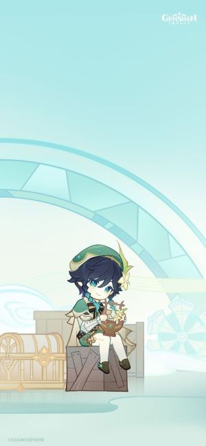
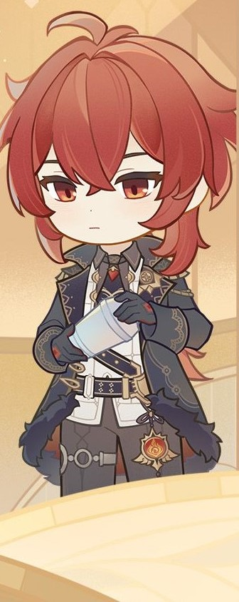

Mondstadt City
City of Winds ✥
A city of freedom that lies in the northeast of Teyvat. From amongst mountains and wide-open plains, carefree breezes carry the scent of dandelions — a gift from the Anemo God, Barbatos — across Cider Lake to Mondstadt, which sits on an island in the middle of the lake.
View of Mondstalt
Charactors in Mondstalt
Venti
A bard that seems to have arrived on some unknown wind — sometimes sings songs as old as the hills, and other times sings poems fresh and new. Likes apples and lively places but is not a fan of cheese or anything sticky. When using his Anemo power to control the wind, it often appears as feathers, as he's fond of that which appears light and breezy.
Diluc
Born into the affluent Ragnvindr Clan, Diluc is the current owner of the Dawn Winery and a nobleman of high esteem in Mondstadt. While a past incident caused him to split ways with the Knights of Favonius, he continues to protect Mondstadt in his own way.
Other Countries' Capital in Teyvat
| Country | Capital | Element |
|---|---|---|
| Mondstadt | Mondstadt City | Wind |
| Liyue | Liyue Port | Rock |
| Inazuma | Inazuma City | Thunder |
| Sumeru | Sumeru City | Grass |